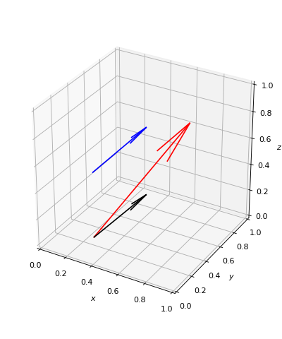

Vector¶
-
class
owcsimpy.geoobjects.bases.vector_py.Vector_py(coord, refPoint=array([0., 0., 0.]), which='spherical')[source]¶ A 3D vector.
- Parameters
- coord: ndarray(3,)
coord can be either represents spherical coordinates, i.e., np.array([radius,polar,azimuth]) or Cartesian coordinates, i.e., np.array([radius,polar,azimuth]). The default method is the spherical one. Change the parameter which to change the instantiation method.
- refPoint: ndarray(3,)
refPoint is the reference point of the vector.
- which: {‘spherical’,’cartesian’}
which defines which representation that is used. which is either ‘spherical’ (default) or ‘cartesian’.
- Raises
- NotImplementedError:
When which is neither ‘spherical’ nor ‘cartesian’.
Notes
This class supports a callable method (with empty argument) that returns its Cartesian coordinates.
Examples
>>> import numpy as np >>> import matplotlib.pyplot as plt >>> from owcsimpy.geoutils.draw import draw >>> from owcsimpy.geoobjects.bases.vector_py import Vector_py as Vector >>> r = 0.5; polar = np.deg2rad(45); azimuth = np.deg2rad(25) >>> v1 = Vector(np.array([r,polar,azimuth]),refPoint=np.array([0.25,0.25,0]),which='spherical') >>> # Normalize length and rotate >>> v2 = v1.normalize().rotate(theta=np.deg2rad(30),refVector=np.array([0,0,1])) >>> # Translate >>> v3 = v1.translate(v1.refPoint+np.array([0,0,0.5])) >>> # Draw >>> fig,ax = draw(vectors=[v1,v2,v3],colors=['black','red','blue'],figsize=(5,6)) >>> plt.show()
(Source code, png, hires.png, pdf)
>>> import matplotlib.pyplot as plt
- Attributes
- spherical: ndarray(3,)
Spherical coordinates of the vector.
- cartesian: ndarray(3,)
Cartesian coordinates of the vector.
- refPoint: ndarray(3,)
The reference point of the vector.
-
normalize(self)[source]¶ Normalize the vector into a unit length vector.
- Returns
- A new vector object.
{kind=link}
{kind=link}